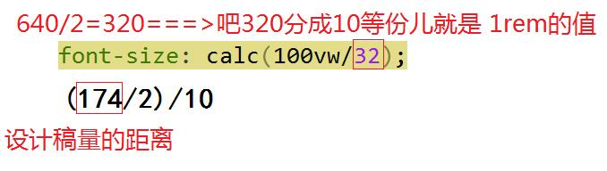
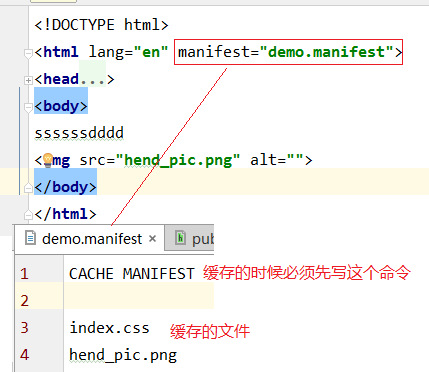
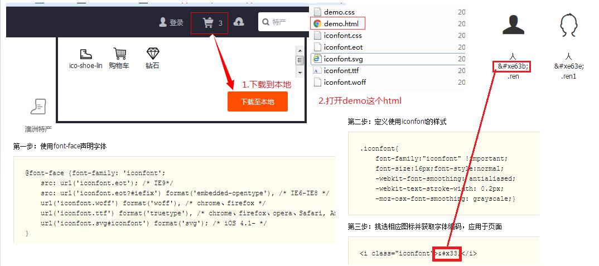

工具
移动端常用的mate开头
//优先采用谷歌内核，加载，ie内核采用最新版本的 <meta http-equiv="X-UA-Compatible" content="IE=edge,chrome=1"> //移动常用的mate声明 <meta name="viewport" content="width=device-width, initial-scale=1, maximum-scale=1, user-scalable=no"> //禁止苹果对连续的数字识别为电话号码 <meta name="format-detection" content="telephone=no">
H5应用音乐标签是audio标签而非video标签,video是视频，在ios上不能隐藏
//声明格式
<audio autoplay="" class="" >
<source src="mp3/1.mp3" type="audio/mpeg">
</audio>
window.onload = function(){
//让页面加载的时候就加载音乐---->,由于ios默认阻止掉了这个事件，所以我们让用户刚一触碰的时候就触发音乐
document.addEventListener('touchstart', function(){
document.getElementsByTagName("audio")[0].play();
}, false);
//点击指定的div关闭音乐
document.getElementById("box").onclick = function(){
document.getElementsByTagName("audio")[0].paused();
}
}
用swiper.min.js制作翻屏的H5 onSlideChangeEnd这是个回调函数,swipers.activeIndex == 1就是页面的index=1的时候触发这个函数：这里面可以指定动画
html, body {position: relative;height: 100%; }
body {
background: #eee;
font-family: Helvetica Neue, Helvetica, Arial, sans-serif;font-size: 14px;color:#000;margin: 0;padding: 0;
}
.swiper-container {width: 100%;height: 100%;}
.swiper-slide { text-align: center; font-size: 18px;background: #fff; }
//调用的js
window.onload = function(){
var swiper = new Swiper('.swiper-container', {
pagination: '.swiper-pagination',
paginationClickable: true,
direction: 'vertical',
onSlideChangeEnd: function(swipers){
if (swipers.activeIndex == 1) {
console.log(document.querySelector("#swipes1").classList.add("obj"));
console.log(document.querySelector("#swipes1").classList)
}
}
});
}
区分设备的js代码，，pc和移动端
function browserRedirect() {
var sUserAgent = navigator.userAgent.toLowerCase();
var bIsIpad = sUserAgent.match(/ipad/i) == "ipad";
var bIsIphoneOs = sUserAgent.match(/iphone os/i) == "iphone os";
var bIsMidp = sUserAgent.match(/midp/i) == "midp";
var bIsUc7 = sUserAgent.match(/rv:1.2.3.4/i) == "rv:1.2.3.4";
var bIsUc = sUserAgent.match(/ucweb/i) == "ucweb";
var bIsAndroid = sUserAgent.match(/android/i) == "android";
var bIsCE = sUserAgent.match(/windows ce/i) == "windows ce";
var bIsWM = sUserAgent.match(/windows mobile/i) == "windows mobile";
if (bIsIpad || bIsIphoneOs || bIsMidp || bIsUc7 || bIsUc || bIsAndroid || bIsCE || bIsWM) {
//移动端需要执行的
}else
{
//pc端
}
}
让移动端等比缩放成pc端的方法
.body1{position: absolute !important;left: 0% !important;}
$(".body").addClass("body1");
网页加载进度条的实现 获得背景图片和img---->src的物理地址函数
//网页进度条loading需要加载的图片
var arr = [];//存放图片地址的数组
function browserRedirect(id) {
var sUserAgent = navigator.userAgent.toLowerCase();
var bIsIpad = sUserAgent.match(/ipad/i) == "ipad";
var bIsIphoneOs = sUserAgent.match(/iphone os/i) == "iphone os";
var bIsMidp = sUserAgent.match(/midp/i) == "midp";
var bIsUc7 = sUserAgent.match(/rv:1.2.3.4/i) == "rv:1.2.3.4";
var bIsUc = sUserAgent.match(/ucweb/i) == "ucweb";
var bIsAndroid = sUserAgent.match(/android/i) == "android";
var bIsCE = sUserAgent.match(/windows ce/i) == "windows ce";
var bIsWM = sUserAgent.match(/windows mobile/i) == "windows mobile";
if (bIsIpad || bIsIphoneOs || bIsMidp || bIsUc7 || bIsUc || bIsAndroid || bIsCE || bIsWM) {
//移动端需要执行的
//pc端
id.each(function(){
//解析得到的图片地址
if ($(this).css("backgroundImage") !="none") {//这个属性是背景的图 !="none"是排除img的属性为none不是空
var lastLength = $(this).css("backgroundImage").length - 1;
var oSrc = $(this).css("backgroundImage").substring(4,lastLength);
// alert(oSrc);
console.log($(this).css("backgroundImage"));
arr.push(oSrc);
}
if ($(this).attr("src")) {//这个属性是图片的src
arr.push($(this).context.src);
}
})
}else
{
//pc端
id.each(function(){
//解析得到的图片地址
if ($(this).css("backgroundImage") !="none") {//这个属性是背景的图 !="none"是排除img的属性为none不是空
var lastLength = $(this).css("backgroundImage").length - 2;
var oSrc = $(this).css("backgroundImage").substring(5,lastLength);
// alert(oSrc);
console.log($(this).css("backgroundImage"));
arr.push(oSrc);
}
if ($(this).attr("src")) {//这个属性是图片的src
arr.push($(this).context.src);
}
})
}
}
browserRedirect($("[datLading='datLading']"));
var iLength = 0;
for (var i = 0; i < arr.length; i++) {
var oImg =new Image();
oImg.src = arr[i];
oImg.onload=function()
{
iLength++;
$(".lading-span").animate({//进度条运动的width -->100%
width : parseInt(iLength/arr.length*100)+'%'
},50);
if(iLength == arr.length)//这里就是已经加载完毕了
{
$(".lading").hide();//进度条的div隐藏
}
};
}
Jquery屏蔽ios下上下弹性(上下不滑动)
//Jquery屏蔽ios下上下弹性
$(window).on('scroll.elasticity', function (e) {
e.preventDefault();
}).on('touchmove.elasticity', function (e) {
e.preventDefault();
});
百度分享 注意a标签里面的data-cmd 其他的样式自定义
<a class="bds_more" onclick="return false" data-cmd="more">分享</a>
.bds_more{background-image: none;} //自定义的时候背景为none
.bdshare_popup_box{margin: 10px 0 0 -160px;!important;} //修改百度分享的位置
window._bd_share_config={
"common":{"bdSnsKey":{},"bdText":"","bdMini":"2","bdPic":"","bdStyle":"0","bdSize":"16"},
"share":{'bdCustomStyle':'css/public.css'}, //这里的public.css 就是引用的你定义那个按钮样式的css
// "image":{"viewList":["qzone","tsina","tqq","renren","weixin"],"viewText":"分享到：","viewSize":"16"}, //这里的imgage就是隐藏网页图片分享
"selectShare":{"bdContainerClass":'null',"bdSelectMiniList":["qzone","tsina","tqq","renren","weixin"]}
};
with(document)0[(getElementsByTagName('head')[0]||body).appendChild(createElement('script')).src='http://bdimg.share.baidu.com/static/api/js/share.js?v=89860593.js?cdnversion='+~(-new Date()/36e5)];
文字自动换行
1. word-break:break-all;只对英文起作用，以字母作为换行依据 2.word-wrap:break-word; 只对英文起作用，以单词作为换行依据 3. white-space:pre -wrap; 只对中文起作用，强制换行
H5视频a标签的呈现形式
//禁止右键视频另存为的js
document.oncontextmenu=new Function("event.returnValue=false");
document.onselectstart=new Function("event.returnValue=false");
//video标签里面的
<video src="../../huizhou.mp4" autoplay controls name="media"></video>
//但是还需要让video标签居中的css 省略...
字符串拼接
str+="<div class='col-md-4'><img class='handers-img' src='"+'\/avatar\/'+result[i].avatar+"'><h2>"+result[i].username+"</h2> <p>"+result[i].liuyan+"</p><p><a class='btn btn-default' href='#' role='button'>查看详情 »</a></p></div>"
AJAX嵌套 迭代器的使用
$.ajax({
"url": "/getallshuoshuo?page=0", //开始的时候请求1个ajax接口
"type": "get",
"success": function (result) { //获得ajax的后台数据
//result是一个数组
var result = result.data;
iterator(0);
//迭代器
function iterator(i) {
if (i == result.length) {//完成所有的遍历之后要做的
//在这里书写请求完毕之后做的事情
return; //不用继续迭代了
}
$.get("/getUserInfo?username="+result[i].username, function (result2) {
//修改字典，给字典增加一项,就是在上一个请求的数据的基础上,在用ajax请求另外1个接口,拼接1个新的数据在展示
console.log(result2)
result[i].avatar = result2.avatar;
console.log( result[i])
iterator(i + 1); //完成1次请求之后再继续+1
}
);
}
}
});
font-Size vw适配

html{font-size:calc(100vw/32)}
//普通的rem算法
(174/2)/10
//(设计稿测量的距离/2)/10
rem以前js渲染模式,中间居中
@media only screen and (min-width: 640px) {
html{font-size: 32px !important;}
}
H5离线存储 node亲测

1. 如果是Apache(阿帕奇)等不支持.manifest格式文件的就要在他下面的httpd.conf文件下面配置服务器设置头信息 : AddType text/cache-manifest .manifest ==>node天生支持可忽略1 2. html标签加 : manifest=“xxxxx.manifest” 3. 写manifest文件 : 离线的清单列表 先写 : CACHE MANIFEST 后面2个用的较少 FALLBACK : 第一个网络地址没获取到，就走第二个缓存的 NETWORK ：无论缓存中存在与否，均从网络获取
本地存储window.sessionStorage 临时性存储(页面关闭的时候删除),window.localStorage永久性存储(永久的存储，不会删除)//storage事件 数据改变的时候 被触发(当前页面不会触发)
window.onload = function(){
var aBtn = document.getElementsByTagName('button');
var oInput =document.querySelector('input');
aBtn[0].onclick = function(){
//window.sessionStorage 临时性存储(页面关闭的时候删除)
//window.localStorage 永久性存储(永久的存储，不会删除)
window.localStorage.setItem('name',oInput.value);
}
aBtn[1].onclick = function(){
//
var oo = window.localStorage.getItem('name');
alert(oo);
}
//storage事件 数据改变的时候 被触发(当前页面不会触发)
window.addEventListener('storage',function(){ //storage当前页面的事件不会触发
alert("1")
},false)
// setItem():
// 设置数据，key\value类型，类型都是字符串
// 可以用获取属性的形式操作
// getItem():
// 获取数据，通过key来获取到相应的value
// removeItem():
// 删除数据，通过key来删除相应的value
// clear()
}
ajax同域 1.通过iframe的contentWindow可以操作同域的页面2.还可以通过window.open 的返回值操作
window.onload = function(){
var oBtn = document.getElementById("btn");
var iframe = document.getElementById("iframe");
//通过iframe的contentWindow可以操作同域的页面
oBtn.onclick = function(){
iframe.contentWindow.document.body.style.background='red';
}
//还可以通过window.open 的返回值操作
// var newWindow = null;
// oBtn.onclick = function(){
// //返回被打开窗口的window对象
// newWindow = window.open = ('index2.html','_blank');
//// newWindow.document.body.style.background='red';
// }
}
跨域以及window 对象 postMessage:发送域名请求的事件message接受域监听的事件ev.data:发送过来的数据ev.origin 保存消息的发送的域 ,可以用来限制发送的域名
//发送请求的域
window.onload = function(){
var oBtn = document.getElementById("btn");
var iframe = document.getElementById("iframe");
oBtn.onclick = function(){
//postMessage：可以通过这个对象底下的方法给另外1个窗口发送信息
//接收消息的窗口的window对象.postMessage();注意请求的地址要和iframe一样
//参数1：你发送过去的内容 ,参数2你请求的域名记得带上http协议
iframe.contentWindow.postMessage('123','http://www.pengjino.cn/static/HTML5/testAjax.html');
}
}
接受请求的域
window.onload = function(){
window.addEventListener("message",function(ev){
alert("接受到页面接受的内容了");
// message 事件的事件对象下保持了发送过来的内容
// ev.data:发送过来的数据
// ev.origin 保存消息的发送的域 ,可以用来限制发送的域名
if (ev.data =='123') { //如果确认传递过来的数据是正确的
document.body.style.background='red';
}
},false)
//这里是被访问的域名操作他的父级对象
document.getElementById("btn2").onclick = function(){
//parent => window 如果当前页面是顶级，没有被其他页面所包含，
//那么parent就是当前页面的window对象，那么如果被包含了，则parent就是包含当前页面的父级页面的window对象
parent.document.body.style.background = 'green';
// window : 当前窗口
// parent : 父级窗口
// top : 顶级窗口
}
}
解决浏览器的一些黄金手段网站
各浏览器hack写法查询：http://browserhacks.com/ 让老版本浏览器支持HTML5新标签：https://github.com/aFarkas/html5shiv IE6-8支持媒体查询min/max-width特性：https://github.com/scottjehl/Respond 检测浏览器是否支持某特性：https://modernizr.com 查询属性、标签兼容性：http://caniuse.com/ 压缩图片(超级牛逼):https://tinypng.com/
微信环境下音乐和视频自动播放解决方案 微信环境下音乐和视频自动播放解决方案
<audio preload="preload" controls id="car_audio" src="http://media.xitaoinfo.com/ei_zamenjiehunba.mp3" loop></audio>
<video id="video" controls="" preload="none" mediagroup="myVideoGroup" poster="http://media.w3.org/2010/05/sintel/poster.png">
<source id="mp4" src="http://media.w3.org/2010/05/sintel/trailer.mp4" type="video/mp4">
<source id="webm" src="http://media.w3.org/2010/05/sintel/trailer.webm" type="video/webm">
<source id="ogv" src="http://media.w3.org/2010/05/sintel/trailer.ogv" type="video/ogg">
<p>Your user agent does not support the HTML5 Video element.</p>
</video>
<script src="http://res.wx.qq.com/open/js/jweixin-1.0.0.js"></script>
<script>
//一般情况下，这样就可以自动播放了，但是一些奇葩iPhone机不可以
document.getElementById('car_audio').play();
//必须在微信Weixin JSAPI的WeixinJSBridgeReady才能生效
document.addEventListener("WeixinJSBridgeReady", function () {
document.getElementById('car_audio').play();
document.getElementById('video').play();
}, false);
</script>
NODE环境下 browsersync 测试同步工具的使用 官网
1.在node环境下 首先安装 browsersync 安装到全局命令 npm install -g browser-sync 2.在git里面输入 // --files 路径是相对于运行该命令的项目（目录） 只修改css browser-sync start --server --files "css/*.css" // 如果你的文件层级比较深，您可以考虑使用 **（表示任意目录）匹配，任意目录下任意.css 或 .html文件。 browser-sync start --server --files "**/*.css, **/*.html" //如果已经有了服务器 // 主机名可以是ip或域名 browser-sync start --proxy "http://127.0.0.1:xxx" "css/*.css"
自动化打包工具 gulp中文网
1.在文件目录下 初始化项目 npm init (执行完这个取完name 就会在项目下面出现1个package.json类似的文件)
2.sudo npm install gulp --save-dev 安装gulp 自动化工具 (安装完成之后打开package.json检查)有没类似"gulp": "^3.9.1"的东西
devDependencies": {
"gulp": "^3.9.1"
}
3.在项目根目录建立1个gulpfile.js文件
var gulp = require('gulp');
/* generate file version hashcode */
var rev = require('gulp-rev');
/* with the version of files to replace normal files */
var revReplace = require('gulp-rev-replace');
/* combined all css file into one file and combined all js file into one file */
var useref = require('gulp-useref');
/* operate file as stream */
var filter = require('gulp-filter');
/* compress js files */
var uglify = require('gulp-uglify');
/* compress css files */
var csso = require('gulp-csso');
gulp.task('default', function () {
var jsFilter = filter('**/*.js', {restore: true});
var cssFilter = filter('**/*.css', {restore: true});
var indexHtmlFilter = filter(['**/*', '!**/index.html'], {restore: true});
return gulp.src('src/index.html')
.pipe(useref())
.pipe(jsFilter)
.pipe(uglify())
.pipe(jsFilter.restore)
.pipe(cssFilter)
.pipe(csso())
.pipe(cssFilter.restore)
.pipe(indexHtmlFilter)
.pipe(rev())
.pipe(indexHtmlFilter.restore)
.pipe(revReplace())
.pipe(gulp.dest('dist'));
});
//自己注释的gulp常用打包
var gulp = require('gulp');
var rev = require('gulp-rev'); ////给文件添加版本号
var revReplace = require('gulp-rev-replace'); ////更新文件里面的引用
var useref = require('gulp-useref');//通过注释的方法写一些注释，（作用是让css或者js合拼为1个文件）
var filter = require('gulp-filter');//文件筛选和恢复
var uglify = require('gulp-uglify');//压缩js代码插件
var csso = require('gulp-csso'); //压缩css代码插件
var postcss = require('gulp-postcss');//给css添加浏览器前缀
var autoprefixer = require('autoprefixer'); //css前缀依赖
var cssnano = require('cssnano'); //css前缀依赖
gulp.task('default', function () {
var jsFilter = filter('**/*.js', {restore: true});
var cssFilter = filter('**/*.css', {restore: true});
var indexHtmlFilter = filter(['**/*', '!**/index.html'], {restore: true});
//var processors = [autoprefixer({browsers: ['last 1 version']}),cssnano(),]; css前缀依赖
//下面的img目录的图片,拷贝到list/img目录下==>(不改变)
gulp.src('img/*.{png,jpg,jpeg,gif,ico}')
.pipe(gulp.dest('dist/img'));
//gulp.src('imges/*.{png,jpg,jpeg,gif,ico}')
//.pipe(gulp.dest('dist/imges'));
//gulp.src('css/*.{png,jpg,jpeg,gif,ico,css,html,js}')
//.pipe(gulp.dest('dist/style'));
return gulp.src('index.html')//你项目下面你想压缩的文件路径
.pipe(useref())//检测文件里面的注释，仍会流里面
.pipe(jsFilter)//赛选js
.pipe(uglify())//压缩js
.pipe(jsFilter.restore)//扔回流
.pipe(cssFilter)//赛选css
//.pipe(postcss(processors))//css前缀(没测试)
.pipe(csso()) //压缩css
.pipe(cssFilter.restore)//扔回流
.pipe(indexHtmlFilter)//打印版本号的时候给首页排除
.pipe(rev())//给文件添加版本号
.pipe(indexHtmlFilter.restore)//放回流里面
.pipe(revReplace())//更新文件里面的引用
.pipe(gulp.dest('dist'));//文件已经结束,吧压缩的包放回dist文件夹里面
});
4.安装一些gulp插件 npm install gulp-rev gulp-rev-replace gulp-useref gulp-filter gulp-uglify gulp-csso --save-dev
博客代码高亮编辑 SyntaxHighlighter代码高亮插件下载地址
iconfoot头像图标 阿里字体引用方法

jquery定义插件的常用格式
格式1:
////插件最优格式 默认给的是选择器模式
;(function($,window,document,undefined){
//默认的参数-->给用户配置的
var _def_ ={
name:"dnScroller",
effect :500
}
var _propt_ ={
//init用来初始化参数 dom,和变量的定义
_init:function(options){
this.options = $.extend(_def_,options);
this._$E = $(this);//保存jq原始this,用户传进来的对象
this._$P = this._$E.find(".pj-scroller-pages");//
this.length =this._$P.find("pj-scroller-page").length;//每页的个数
this.index = 0;//初始化页码
this.olck = false;//动画锁
},
//_handle 专门处理事件的
_handle :function(){
//同级调用插件的方式this.lock,调用默认参数this.options.xx
//插件开始的时候要存一下tihs
var that = this;
that._$E.bind("mousewheel",function(e){
if (that.lock) return;
that.olck = true;
console.log(that.olck)
})
}
}
//鼠标滚动翻屏插件
$.fn.Carousel = function(options){
$.extend(this,_propt_); //让插件继承 _propt_里面的所有方法
this._init(options); //初始化插件方法
this._handle();
console.log(this.options.effect)//调用默认参数方法
console.log(this.index)//调用_propt_里面的方法
}
})(jQuery,window,document);
格式2:
;(function($,window,document,undefined){
//字符截断
$.fn.CutString = function(options){
var defaults = {
'numbers':'200',//截断的字符
'lastStr':'...' //后面的自定义...,用户可以自定义
}
var str = $.extend({}, defaults, options);
this.each(function(){ //包装级
var oThis = $(this); //html节点
oThis.each(function(){
var oText = $(this).text().substring(1,str.numbers)+str.lastStr;
$(this).text(oText);
})
})
return this;
}
})(jQuery,window,document);